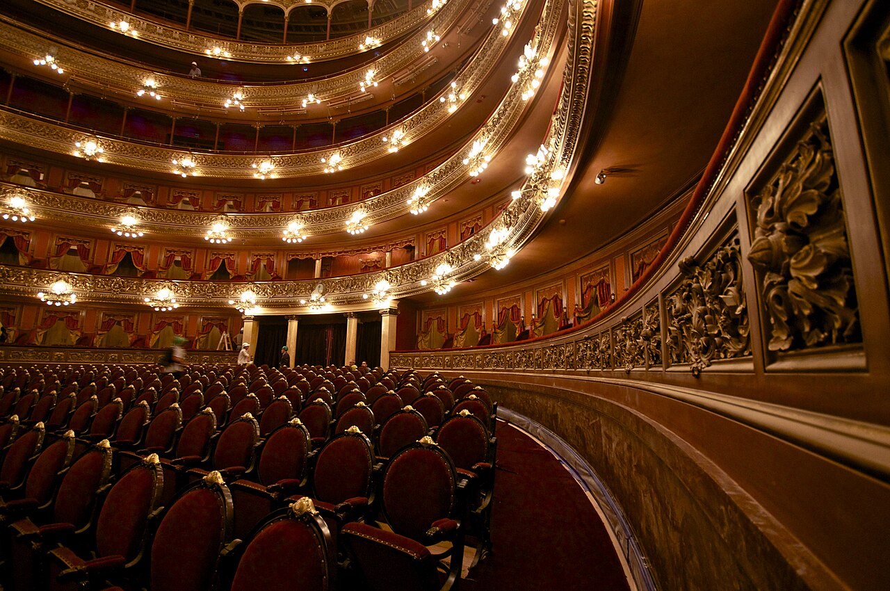
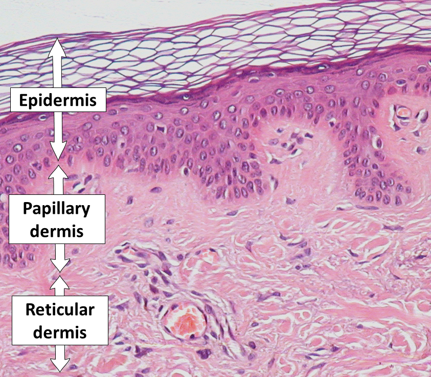
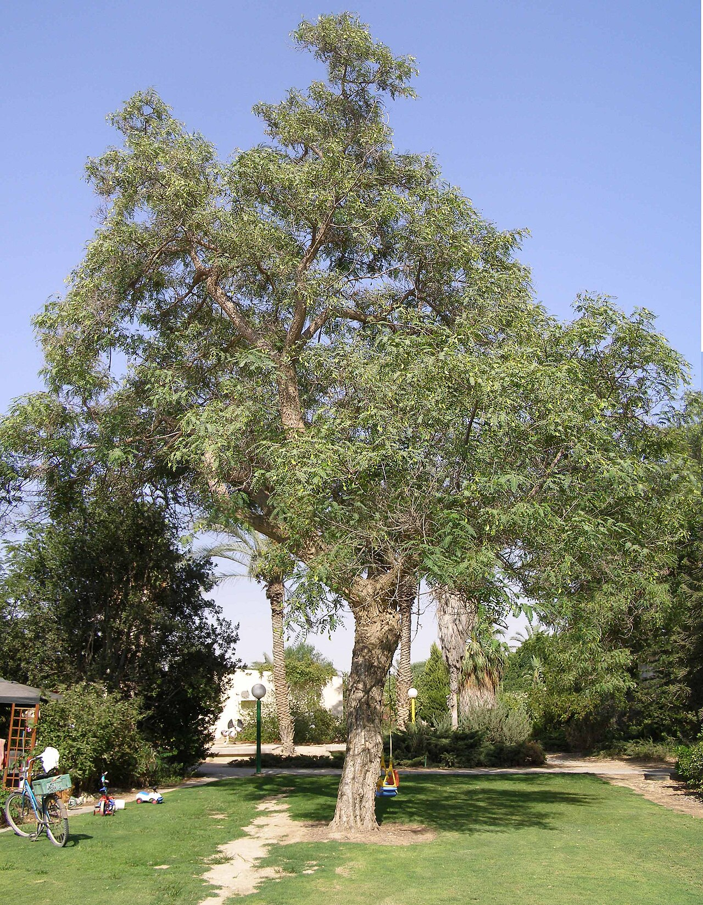

Lula.
diario de la mañana — el mundo, tu ciudad y lo que te asombra

Buen día, sábado. Después de dos días de tormenta, hoy el SMN descarta lluvia en la ciudad: 14° a 25°, parcialmente nublado, el mejor día para salir de toda la semana. Edición liviana, como corresponde. Y como hoy se termina octubre, al final está «Tu mes en Lula»: tu herbario, tus palabras y los números del mes.
- La semana que se va2'
- Ciencia: lo que comiste cuando empezó5'
- Mirá a tu alrededor2'
- La palabra del día1'
- Le français du matin2'
- Sábado de ballet: Don Quijote4'
- Lo que me asombra hoy1'
- Pasatiempo: sudoku difícil20'
- Cuaderno: repaso y quiz3'
- Tu mes en Lula5'
La COP17 cerró con acuerdos y sin plata
Ayer, en tiempo suplementario y después de dos semanas de negociación, cerca de doscientos países adoptaron el paquete de decisiones de la COP17 de biodiversidad en Ereván. Hubo textos aprobados y hubo nuevos aportes al fondo GBFF, pero el agujero de fondo sigue abierto: el marco de Kunming-Montreal necesita 200.000 millones de dólares por año hasta 2030 y lo comprometido está varios órdenes de magnitud por debajo. La primera revisión global del marco termina, entonces, con un diagnóstico claro y un financiamiento que no.
Y además, de la semana: en Israel el escrutinio terminó sin mayoría para ninguno de los dos bloques, y ahora la decisión pasa al presidente Herzog, que elige a quién le da el mandato. Acá, el riesgo país tocó el máximo del año el lunes, cerró la semana aflojando, y el dólar se mantuvo con el Tesoro vendiendo. Y la Fed dejó las tasas quietas mientras el bono estadounidense a diez años volvía a coquetear con el 5 %.
Lo que comés cuando empieza la inflamación queda grabado en el tejido
De qué estamos hablando: que la obesidad empeora las enfermedades inflamatorias es viejo. La pregunta nueva de este trabajo de Nature es más fina y más rara: ¿importa lo que el animal estaba comiendo justo cuando la enfermedad arrancó, incluso si no era obeso y aunque después cambie la dieta? La respuesta, en ratones, es que sí, y que el tejido se lo acuerda.

Quién es quién
- Memoria inflamatoria de tejido: la idea de que un tejido que ya pasó por una inflamación queda cambiado —en sus células residentes y en su epigenoma— y responde distinto la próxima vez. No es memoria inmunológica clásica de anticuerpos: es el tejido, no el linfocito circulante.
- Modelo de imiquimod: una crema que activa receptores de inmunidad innata y produce en el ratón una inflamación de piel parecida a la psoriasis. Se puede prender y apagar, y volver a prender: por eso sirve para estudiar recaídas.
- Inflamación tipo 17: el eje IL-17 / IL-23, con linfocitos T CD4⁺ Th17 y neutrófilos. Es el que manda en psoriasis y el blanco de varios biológicos que hoy se usan en clínica.
Qué encontraron
- El momento manda más que la historia. Ratones flacos que comieron dieta alta en grasa solo durante el inicio del cuadro recayeron después con una intensidad comparable a la de ratones obesos. La dieta previa pesó menos que la dieta del momento del disparo.
- Quién lo guarda: el efecto depende de células T CD4⁺, y la señalización inflamatoria de neutrófilos aparece asociada a esa impronta duradera.
- Y lo más esperanzador: pasar a dieta baja en grasa después de unos pocos días de dieta grasa redujo la inflamación cutánea. La ventana parece ser eso, una ventana: angosta, pero abierta.
Lectura crítica y la conexión con lo que estudiás
- Es ratón, y es piel. El modelo de imiquimod se parece a la psoriasis, no es psoriasis. Nada de esto se probó en personas, y las notas de prensa que hablan de «tus elecciones alimentarias» están extrapolando por su cuenta.
- «Dieta alta en grasa» es una dieta de laboratorio, con un porcentaje enorme de grasa y una composición que no se parece a comer un asado. Cuando leas el paper, mirá la ficha del alimento antes que la conclusión.
- Por qué es interesante igual: porque mueve la pregunta de «qué comés» a «cuándo lo comés respecto de qué», y porque propone un mecanismo con dueño —T CD4⁺— que se puede ir a buscar. En inmunología es el tipo de experimento que te enseñan a diseñar: mismo desafío, distinto contexto, y el contexto como variable.
«Diet at disease onset determines tissue inflammatory memory». Jiang, Tayeri y Bapat, Nature, 28 de octubre de 2026, doi:10.1038/s41586-026-11181-4
La tipa, que llueve, y el biguá



El árbol: tipa
| Nombre científico | Tipuana tipu (Fabáceas, la familia de las leguminosas). Del noroeste argentino y de Bolivia; en Buenos Aires forma los túneles verdes de Palermo y Belgrano. |
|---|---|
| Cómo reconocerla | Copa ancha y chata, como un paraguas; hoja compuesta de muchos folíolos chiquitos; flores amarillas en noviembre; y un fruto sámara, con un ala, que cae girando. |
| El fenómeno | Es «el árbol que llueve»: en primavera caen gotitas pegajosas desde la copa, aun sin lluvia. No es la tipa: son las chicharritas (Cephisus siccifolius), insectos chupadores cuyas ninfas se envuelven en espuma en las ramas y eliminan el exceso de savia. Lo que te moja es, con todas las letras, pis de insecto. |
El ave: biguá
| Nombre científico | Phalacrocorax brasilianus (Falacrocorácidos). Negro, de pico ganchudo, en el río y en los lagos de los parques. |
|---|---|
| Cómo reconocerlo | Nada bajo, casi hundido, y desaparece de golpe. Después se para en un poste con las alas abiertas en cruz, quieto, como secándose. Es exactamente eso. |
| Lo asombroso | Sus plumas se mojan, a diferencia de las del pato. No es un defecto: al absorber agua pierde flotabilidad y bucea con menos esfuerzo, a cambio de tener que secarse al sol después de cada sesión de pesca. Un animal que resolvió el problema de hundirse rompiendo la impermeabilidad. |
octubre sustantivo
latín octo (ocho) → october mensis (el mes octavo) → castellano octubre · francés octobre · inglés October
El mes diez se llama «octavo» por una mudanza vieja. En el calendario romano arcaico el año empezaba en marzo, con la primavera del hemisferio norte, y entonces septiembre, octubre, noviembre y diciembre eran efectivamente el séptimo, el octavo, el noveno y el décimo. Cuando el inicio del año se corrió a enero, los nombres se quedaron donde estaban y nadie los corrigió: llevamos dos mil años contando mal, a la vista de todos.
Es un buen recordatorio de cómo funcionan las convenciones: sobreviven a la razón que las creó. Lo mismo pasa con la nomenclatura de genes que se llaman por el fenotipo de una mosca, o con unidades que nadie usaría si las inventara hoy. Cuando algo tiene nombre, el nombre se vuelve más resistente que el motivo.
On y va ?
— On y va ?
— Oui, mais j'ai besoin d'un plan.
— Ce n'est pas loin, on peut y aller à pied.
— D'accord, on y va !
| on y va ? | ¿vamos? [o-ni-VA] |
|---|---|
| j'ai besoin de… | necesito… [she be-SUÁN de] |
| à pied | a pie, caminando [a PIE] |
| d'accord | de acuerdo, dale [da-KOR] |
Un truco
Esa y de on y va es una palabrita que reemplaza un lugar ya mencionado: «allá». Tu vas à Paris ? — Oui, j'y vais. (¿Vas a París? — Sí, voy allá). Va siempre antes del verbo, al revés que en castellano, y se pega tanto a la pronunciación que il y a suena «ia» y on y va suena «oniva». Aprendela entera, como bloque, y después la desarmás.
Don Quijote: el ballet donde nadie se muere
Después de un mes de cisnes que mueren, wilis que vengan y sombras que bajan del Himalaya, va uno alegre. Don Quijote se estrenó en Moscú en 1869, con coreografía de Marius Petipa y música de Ludwig Minkus, y de la novela de Cervantes toma apenas una excusa: el Quijote casi no baila. La historia real es la de Kitri, hija de un tabernero de Barcelona, y Basilio, un barbero pobre con el que el padre no la deja casarse.
Qué mirar
- El abanico y la pandereta. Kitri baila casi todo el tiempo con un objeto en la mano. No es decoración: te obliga a mirar el torso y los brazos, que es donde está el carácter español estilizado que Petipa inventó para este ballet.
- Los jetés con el pie a la cabeza. En su primera entrada, Kitri salta y se pega el talón a la nuca. Es la carta de presentación del personaje: alegría y riesgo, todo en dos segundos.
- El grand pas final, con los famosos 32 fouettés —los mismos del Lago—, pero acá hechos con desparpajo, a veces con dobles y triples, a veces con el abanico. Es el momento en que la bailarina directamente se luce, y el público lo sabe.
- El salto de Basilio: el partenaire tiene, por una vez, tanto protagonismo como ella. Toda la variación masculina está hecha de saltos grandes y giros en el aire.
Y una curiosidad de oficio: la escena del falso suicidio de Basilio —se clava una daga, Kitri llora, el padre acepta el casamiento y Basilio resucita de un salto— es comedia pura, y es rarísima en el repertorio clásico. El ballet del siglo XIX casi siempre termina en tragedia o en bosque encantado. Acá termina en fiesta.
Si querés entender por qué el ballet no es solemne por naturaleza, mirá este y nada más que este.
Treinta y dos fouettés son física, no magia
Un fouetté en tournant es un giro sostenido sobre una pierna, repetido sin apoyar la otra. Lo asombroso no es el equilibrio: es de dónde sale la energía. En cada vuelta la bailarina abre la pierna libre hacia afuera y la vuelve a cerrar contra el eje. Al abrirla aumenta su momento de inercia y la rotación se frena un poco; al cerrarla, el momento angular se conserva y la velocidad vuelve a subir. Ese «latigazo» —fouetté quiere decir exactamente eso— es, además, el momento en que el pie de apoyo toca el piso y da el pequeño impulso que repone lo que se perdió por fricción.
O sea: no es un giro, son treinta y dos arranques encadenados, cada uno de un cuarto de segundo, sin moverse del lugar y sin marearse —porque además la cabeza hace spotting, se queda fija en un punto y gira de golpe al final—. Pierina Legnani los hizo por primera vez en San Petersburgo en 1893 y el público contó en voz alta. Siguen contando.
El del sábado
Repaso y quiz
Repaso de idiomas
Quiz
El trabajo de hoy muestra que, en ratones, lo decisivo es…
¿De qué células depende esa impronta?
Las gotitas que caen de la tipa son…
¿Por qué el biguá abre las alas al sol?
«Octubre» significa…
En los 32 fouettés, la velocidad se recupera porque…
Tu mes en Lula · octubre de 2026
Treinta y una ediciones. Esto es todo lo que pasó por acá, para que lo marques, lo tildes y lo cierres.
Tu herbario de octubre
Los árboles y plantas que salieron este mes. Tildá los que viste de verdad, en la calle, con tus ojos.
- Lapacho rosado · Ceibo (nuestra flor nacional) · Glicina
- Paraíso (el que se huele antes de verse) · Ombú (que no es un árbol) · Jazmín estrella
- Aguaribay · Naranjo amargo (azahar) · Mburucuyá (la flor de la pasión)
- Santa Rita (betalaínas) · Lantana (cambia de color después de la polinización) · Acacia blanca
- Azalea (grayanotoxinas) · Rosa banksia · Madreselva · Lavanda
- Ligustro (el culpable de tus estornudos) · Plátano · Fresno · Gomero
- Jacarandá (que está justo ahora) · Calistemo · Morera · Cardo · Plumbago · Verbena · Clavel del aire · Tipa
Tus 31 palabras
café · murciélago · ballet · domingo · rodopsina · moda · quiral · híbrido · sinfonía · linaje · terremoto · cultura · corsé · cartílago · glamour · héroe · espectro · jardín · tolerancia · pliegue · dinamita · paisaje · orquesta · sombra · senescencia · vacuna · inmune · gen · matriz · ritmo · octubre
Lo que leíste
Diecinueve textos clásicos, uno por mañana: Kafka («Ante la ley»), Chéjov, Andersen, Wilde, Rilke, Austen, Norwid, Safo, Shakespeare, Tolstói, Sor Juana, Woolf, Dickinson, Shelley, Gautier, Mansfield, Baudelaire, Proust y Rubén Darío. Y de este lado del mapa: Alfonsina Storni, Horacio Quiroga, Roberto Arlt y Alejandra Pizarnik.
Los números del mes
| Ediciones | 31, todas antes de las ocho de la mañana. |
|---|---|
| Papers con DOI | Más de veinticinco, de Nature, Science, Cell y afines, cada uno con su lectura crítica. |
| Empresas y centros argentinos | Más de veinte: Bioceres, mAbxience, Inmunova, Biogénesis Bagó, Sinergium, Zelltek, INTA-UNSAM, Tecnovax, Héritas, Kheiron, CERELA, Puna Bio, Michroma, Oncoliq, Biosidus, el banco de germoplasma del INTA, CIDCA, ANLIS-Malbrán, el Garrahan, GDM, Rizobacter, Keclon, IBYME. |
| Ballets | Cinco: El lago de los cisnes, Manon, Giselle, La Bayadère y Don Quijote. |
| Francés | Seis semanas: saludos, presentarse, la comida, el restaurante, el clima y la ciudad. |
| Sudokus | 31. Fáciles los lunes y martes, medios de miércoles a viernes, difíciles los fines de semana. |
Tu balance
Octubre te dejó 31 mañanas leídas, un idioma empezado de cero y treinta y pico de árboles con nombre propio. No está nada mal para un mes de cursada.
- Quiz: la dieta del momento del inicio · células T CD4⁺ · excreción de chicharritas · porque sus plumas se mojan · mes octavo · baja el momento de inercia.
- Repaso: où est la gare ? · tout droit · un ticket, s'il vous plaît · on y va ? · à pied.
Sudoku:
Fuentes de esta edición
Mañana, domingo: arranca noviembre, con domingo lento. — Lula.